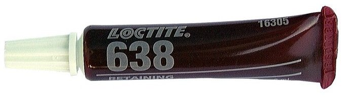

Adhesive, Loctite 638
Adhesive, Loctite 638

Specifications
Loctite 638. 3 ml tube.
Range of application
For sealing of clutch slave cylinder against the gearbox on Saab 900 Sensonic and Saab 9000 M92- from gearbox number D41693.
Transport
No restrictions apply when transporting this product.
Directives
The product is hazardous to personal health. Harmful in case of skin contact. Irritates eyes and skin. Risk of serious eye injuries. May cause allergic reactions in case of skin contact. In case of eye contact, flush immediately with plenty of water and call a physician. In case of skin contact, wash immediately with soap and water.
Use Loctite dosage equipment in order to avoid contact with eyes and skin.